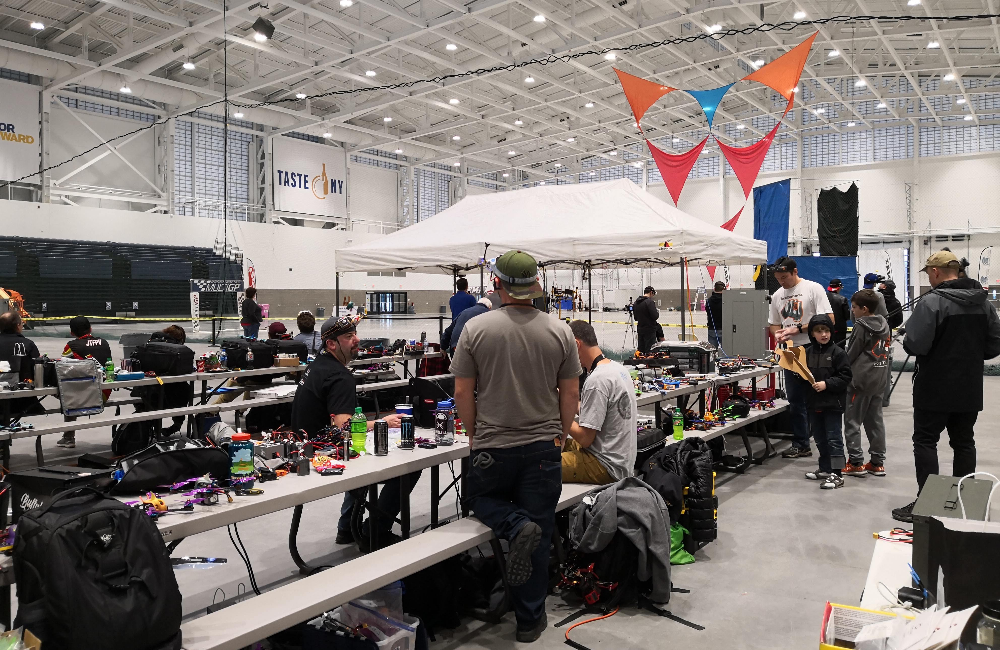
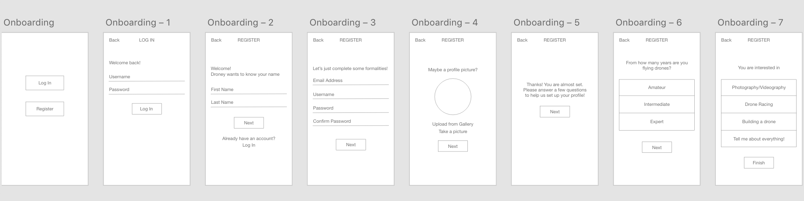
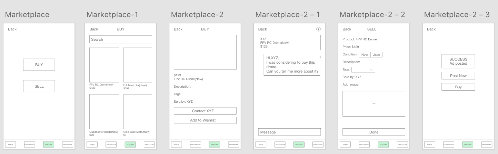

OVERVIEW
We designed a solution to connect information seekers, experienced and novice pilots, educators, entrepreneurs, and general drone enthusiasts in order to build a seamless community that is dedicated to the drone sector. The proposed mobile application, Droney, aims at bridging the gap between the drone enthusiasts and the drone communities.

PROBLEM STATEMENT
Drone enthusiasts have formed demographically concentrated groups to share their knowledge and experience. These groups focus on a few specific topics of interest and act mutually exclusively of one another. Also, many times, individual drone enthusiasts find communication with these groups difficult due to various reasons.
DESIGN QUESTION
How to strengthen the social fabric between the assorted drone communities and build a single platform to solve all the issues of drone enthusiasts?
RESEARCH
Understanding the problem space
The drone sector was new to us, so we did initial research to understand the different categories of drones and to understand the motivation of drone enthusiasts behind using drones. We conducted a pilot interview to get an idea of the answers that we can expect and then modified our questionnaire according to that. After that, we conducted semi-structured interviews of drone pilots who had various interests and experiences in this field. We also attended a drone racing event on the invitation of one of our participants and got valuable insights into the drone community. From the interviews, we identified 2 major drone communities, the racer group and the photography group.
Drone Racing Event
Participant Demographics

Mind Map

Major issues found from research
OUR APPROACH
We concluded that the major issues here are lack of knowledge and lack of communication. We decided to design a mobile application and designed information architecture. After that, we used UI pattern cards to decide the functionalities of the application. The cards were very useful as we were able to take fast decisions about the functions that are necessary for our design. Then we made a low fidelity prototype and from that a medium fidelity prototype. The medium fidelity prototype was used to do the usability testing. We did three iterations of usability testing and changed our design according to the participant feedback.
Information Architecture

UI Patterns Cards

Low Fidelity Prototype

PROTOTYPE
Medium Fidelity Prototype
ONBOARDING: After the first usability test, we understood that it was necessary to ask some basic questions to the participants about their interests and experience in the drone community. It will give them personalized results.

HOME PAGE: In the first design, "Maps" was the home screen. This was confusing for the participants as there was no context available. So, we added a home screen which can redirect them to the desired functions.

MAPS: The design of "Maps" went through various changes. The biggest issue here was the "Hamburger Menu". Maps screen would open up and the participants would look confused, what to do next? Out of 7 participants in the usability testing, only 1 noticed the menu. So, we replaced it with a "Floating Action Button".

DISCUSSIONS & PROFILE: A simple concept of Gamification is added in this section to encourage the users to ask more questions and give more answers. The stats like the number of answers given and the number of upvotes will increase the popularity of the people and the number of downvotes would be helpful in reducing spams.
MARKETPLACE: Our participants complained that the drones and drone parts are very costly. So, to solve this issue, we designed Marketplace. The drone pilots can sell their old drones or drone parts at a cheaper price here. Verified sellers can also use this platform to reach out to more people.

RESOURCES: Here the users can find every information related to drones and drone flying. We have also added a unique feature called "Talk to a Mentor". Here, the new pilots can get one on one guidance from the experts in that field. The mentors can use this platform to publicize their organization or just to share knowledge. In the Hi-Fi design, we changed this feature to "Talk to the Expert".
High Fidelity Prototype
We created few screens for the high fidelity prototype. The most important functionality that we included in this design is the conversational UI. A search bar is added on the top of every screen and it acts as an assistant to the person who is using this application. It gives a better user experience.
REFLECTION
It was a great experience working on this project. The biggest challenge for me was to represent the issues faced by the drone pilots. Next was to find a way to utilize the knowledge of experienced pilots to help the amateur pilots. Another interesting point is the groups in which the drone community is divided. We plan to bridge this gap by providing work opportunities for the people in different groups like the drone videographers can help the drone racers in publicity and advertisement of the racing events.